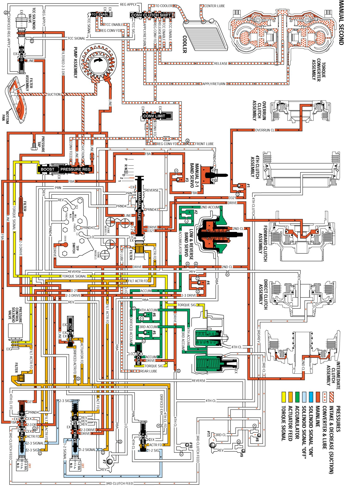

Manual Second Gear
Manual Second Gear
Use the Manual 3-2 downshift in order to provide increased engine braking over Manual Third. Move the shift selector from the Manual Third position to the Manual Second position. You can select Manual Second at any vehicle speed or from any gear range in order to downshift the transmission into second gear.
Manual Valve
In the Manual Second range, line pressure from the pressure regulator valve is directed as D321, D21 and Drive fluid pressures. The D321 fluid pressure is directed to the overrun clutch. The D21 fluid pressure is directed to the 2-3 shift valve. The Drive fluid is directed to the automatic transmission fluid pressure (TFP) manual valve position switch assembly, the forward clutch, the 1-2 shift valve, and the accumulator valve. The manual valve shuts off PRND4 fluid pressure to the TFP manual valve position switch. The manual valve also shuts off PRND43 fluid pressure in order to assist the manual 2-1 band servo spring. This allows the manual 2-1 band to apply.
Automatic Transmission Fluid Pressure (TFP) Manual Valve Position Switch Assembly
The PRND43 fluid exhausts at the manual valve. The TFP manual valve position switch signals the PCM that the transmission is in Manual Second.
1-2 Shift Solenoid (1-2 SS) Valve
When the 1-2 SS valve is de-energized, 1-2 signal pressure exhausts through the solenoid. This allows spring force to move the 1-2 shift valve to the extreme right.
2-3 Shift Solenoid (2-3 SS) Valve
When the 2-3 SS valve is de-energized, 2-3 signal pressure exhausts through the solenoid. This forces the 2-3 shift valve to the extreme right by spring force and by D21 fluid pressure from the manual valve.
1-2 Shift Valve
Spring force holds the 1-2 shift valve to the extreme right. Drive fluid pressure from the manual valve is changed into the 2-3 drive fluid pressure at the 1-2 shift valve. This pressure is directed to the 2-3 shift valve, the TCC PWM solenoid valve, and the intermediate (second) clutch.
2-3 Shift Valve
Spring force and the D21 fluid pressure from the manual valve hold the 2-3 shift valve to the extreme right. The 2-3 drive pressure from the 1-2 shift valve changes into Front Band Apply (FBA) and is directed to the manual 2-1 band servo.
3-4 Shift Valve
Spring force holds the 3-4 shift valve to the extreme right.
Manual 2-1 Band Servo
Front Band Apply (FBA) fluid pressure from the 2-3 shift valve seats the #3 checkball. This causes the fluid to flow through an orifice and into the manual 2-1 band servo piston housing, which applies the manual 2-1 band servo and band.
Forward Clutch
Drive fluid pressure from the manual valve, applies the forward clutch.
Intermediate (Second) Clutch
The Intermediate (Second) Clutch is applied by second fluid pressure from the 1-2 shift valve. The 2-3 drive fluid pressure from the 1-2 shift valve seats the #4 checkball in the case, causing the fluid to flow through two orifices. The 2-3 drive fluid pressure changes to Second apply fluid pressure at the orifices. The Second apply fluid flows into the center support, which applies the intermediate (second) clutch.
Overrun Clutch
The D321 fluid pressure from the manual valve seats the #1 checkball in the case. This causes the fluid to flow through an orifice, where the D321 fluid pressure changes into overrun fluid pressure. The overrun fluid pressure flows through the case and the pump housing, and into the overrun clutch housing, which applies the overrun clutch. The overdrive roller clutch becomes ineffective and provides vehicle engine compression braking.
Manual Second Gear
